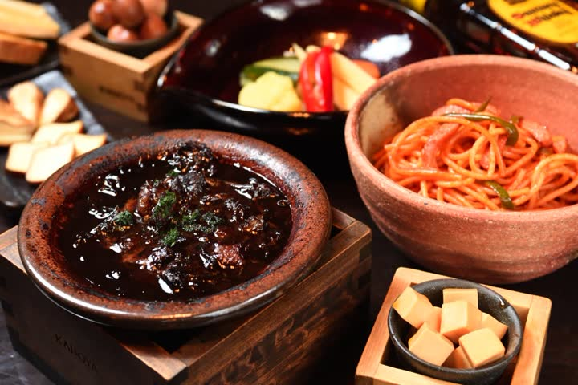

角地の小さなバーから始まりました。暖簾をくぐれば、初めてでもどこか懐かしい。夜六時から朝四時まで、湯島の路地で暖簾を掲げています。
 角
角
私たちが心から愛する角瓶を、キンキンに冷えた専用の銅マグで。最後の一口まで冷たい。

カドヤの煮込、チーズの醤油漬、昭和のナポリタン。一品一品、心を込めて。
代表の故郷、宮城県北部・栗原の米と野菜、地酒。農家直送の滋味をくりはら屋で。
※お知らせの文面は確認用の例です。

東京メトロ千代田線 湯島駅 三番出口より徒歩一〜三分。上野広小路・上野御徒町・御徒町の各駅から徒歩五〜六分。四店舗はいずれも徒歩二分の内にございます。